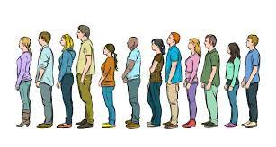

I have a psychology degree and have always been curious to understand why people do what they do. In UX, I have been able to apply people'e interactions and understanding of their actions to improve the UI.
My UX Skills
Jira Helps Project Management
Jira is used for project management. It helps manage the workload for a variety of projects.

Javascript Helps Make the Website More Dynamic and Interactive
Javascript is used to add JQuery code into a website so the user's action can allow the website to do an action varying on the javascript code.

Figma Helps Develop UI-UX documents and prototypes
Figma is used for designers to create their UI-UX documents and create low to high fidelity prototypes.
My Work
CDC Foundation Redesign
We redesigned the CDC foudnation homepage.

Queue Up Project
We designed an app to help people kill time for wait times to get seated at restaurants.